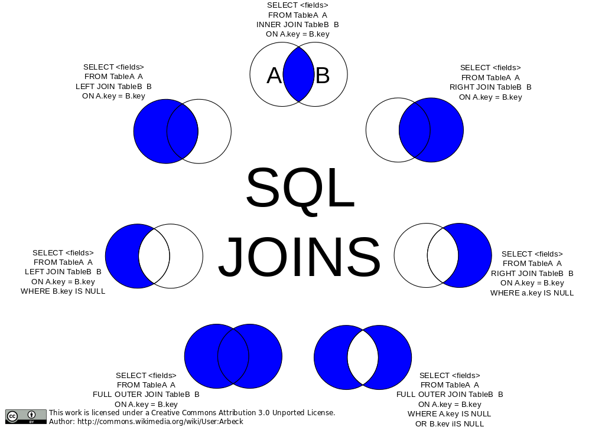

9 Advanced Joins
9.1 Module Introduction
This module covers advanced join operations and set-based logic in Oracle SQL. Students will learn how to write queries that combine multiple tables using cartesian joins, self-joins, and multi-column joins. They will also use set operators like UNION, UNION ALL, INTERSECT, and MINUS to compare and combine result sets.
9.2 Explanation
9.2.1 Cartesian Products
You may have wondered what happens when we omit the ON or WHERE clause when joining tables.
Perhaps surprisingly, SQL accepts this as a valid query and does not raise a syntax error. Instead, you will obtain the “cartesian product” of the two tables. Every selected column will be matched against every other selected column.
This can be useful for getting all possible combinations of distinct values.
SELECT DISTINCT s1.zip, s2.employer
FROM student s1, student s2
ORDER BY s1.zip, s2.employer;- Make sure you understand what is happening in this example!
- This is the default behavior of a join.
- It is the
ONorWHEREclause of a join which filters the cartesian product to the rows which are of interest to us. - Understanding this behavior will help you reason about what is happening behind the scenes when you ask SQL to join tables together.
Reference: Lab 7.1
9.2.2 Self-Joins and Multi-Column Joins
Self-Joins allow a table to be joined to itself. This is useful when comparing rows within the same table, such as prerequisite relationships.
SELECT c1.course_no, c1.description AS course,
c2.course_no AS prereq_no, c2.description AS prerequisite
FROM course c1, course c2
WHERE c1.prerequisite = c2.course_no;This query shows each course along with its prerequisite course information by joining the course table to itself.
Multi-Column Joins involve joining on multiple columns to match composite keys.
SELECT e.student_id, e.section_id, g.grade_type_code, g.numeric_grade
FROM enrollment e
JOIN grade g
ON e.student_id = g.student_id AND e.section_id = g.section_id;This query joins enrollment and grade data using both student_id and section_id to ensure proper matching.
Reference: Labs 7.2 and 10.2
9.2.3 Join Types, Visualized
We can understand the different join types as ways of including results from the different table sources. You may find this diagram useful for understanding how to write a join which fits your use-case.

9.2.4 Set Operators
When we write a query, we obtain a set of rows. However, way may want to combine the results of multiple sets of rows into one new set. Oracle supports four main set operators:
UNION: Combines two result sets and removes duplicatesUNION ALL: Combines and retains all rowsINTERSECT: Returns rows present in both setsMINUS: Returns rows from the first query not found in the second
UNION:
SELECT course_no FROM course WHERE prerequisite IS NOT NULL
UNION
SELECT course_no FROM course WHERE cost > 100;This query combines courses with prerequisites and those with a cost greater than 100, removing duplicates.
UNION ALL:
SELECT course_no FROM course WHERE prerequisite IS NOT NULL
UNION ALL
SELECT course_no FROM course WHERE cost > 100;This query combines the same sets but retains all rows, including duplicates.
INTERSECT:
SELECT student_id FROM enrollment
INTERSECT
SELECT student_id FROM grade;This query returns student IDs that appear in both ENROLLMENT and GRADE.
MINUS:
SELECT student_id FROM enrollment
MINUS
SELECT student_id FROM grade;This query returns student IDs from ENROLLMENT that do not have a corresponding entry in GRADE.
Reference: Labs 9.1–9.2
9.3 Exercises
Identify Cartesian Output Write a query that produces a cartesian product between
STUDENTandINSTRUCTOR.List Courses and Prerequisites Using a self-join, list each course and its prerequisite description.
Match Grades with Enrollments Join
ENROLLMENTandGRADEusing bothstudent_idandsection_id. Display student ID, section ID, and numeric grade.Compare Prerequisite and Cost Criteria Find all
COURSE_NOvalues that have a prerequisite or a cost greater than 200. Show results using bothUNIONandUNION ALL.Find Students in Both Tables Write a query to return all
STUDENT_IDvalues that appear in bothENROLLMENTandGRADEusingINTERSECT.Identify Students with Enrollment but No Grade Return student IDs from
ENROLLMENTwho have no entry inGRADEusingMINUS.
9.4 Q&A
Some conversation starters for the Q&A session:
- When is a cartesian product useful in practice? How can it cause performance issues?
- What are real-world scenarios where a self-join would be necessary?
- Why would you use a multi-column join instead of a single-column join?
- How do set operators differ from joins in terms of functionality and performance?
- What are the differences between UNION and UNION ALL in terms of performance and results?
- How can you use set operators to perform data quality checks?
9.5 Additional Resources
- Oracle SQL by Example, Chapter 7: Labs 7.1–7.2
- Oracle SQL by Example, Chapter 9: Labs 9.1–9.2
- Oracle SQL by Example, Chapter 10: Lab 10.2
- Oracle Documentation: SQL Language Reference – Joins and Set Operators
9.6 Answers
1.
SELECT * FROM student, instructor;2.
SELECT c1.course_no, c1.description AS course,
c2.course_no AS prereq_no, c2.description AS prerequisite
FROM course c1, course c2
WHERE c1.prerequisite = c2.course_no;3.
SELECT e.student_id, e.section_id, g.numeric_grade
FROM enrollment e
JOIN grade g
ON e.student_id = g.student_id AND e.section_id = g.section_id;4.
Using UNION:
SELECT course_no FROM course WHERE prerequisite IS NOT NULL
UNION
SELECT course_no FROM course WHERE cost > 200;Using UNION ALL:
SELECT course_no FROM course WHERE prerequisite IS NOT NULL
UNION ALL
SELECT course_no FROM course WHERE cost > 200;5.
SELECT student_id FROM enrollment
INTERSECT
SELECT student_id FROM grade;6.
SELECT student_id FROM enrollment
MINUS
SELECT student_id FROM grade;